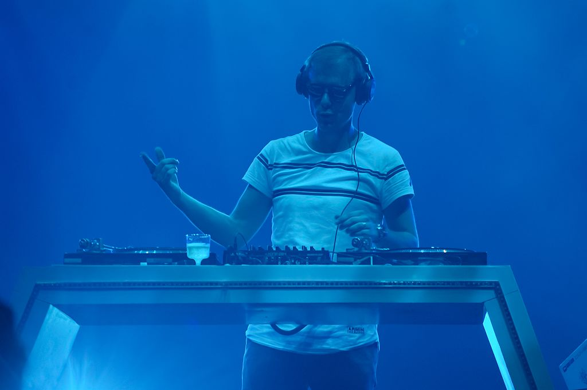

Steve Aoki is a highly successful DJ, record producer, and entrepreneur who started his music
career in the early 2000s. He is renowned for his energetic performances and collaborations
with various artists, including BTS, Linkin Park, and Louis Tomlinson. With over two decades
of experience in the music industry, Steve Aoki continues to be a prominent figure in the
electronic dance music scene. Some of Steve Aoki's most listened songs include: "No Beef", "Pursuit of hapiness",
"Delirious", "Boneless".
Dimitri Vegas & Like Mike
Dimitri Vegas and Like Mike are a Belgian DJ duo consisting of brothers Dimitri and Michael Thivaios.
They started their career in the early 2000s and have since become one of the most successful acts in
the electronic dance music scene. They have also won several awards, including the DJ Mag Top 100 DJs
award in 2015 and 2019. Some of their most listened songs include: "Mammoth", "The Hum", "Tremor", "Complicated",
and "When I Grow Up".

Armin Va Buuren
Armin van Buuren is a Dutch DJ, record producer, and remixer who is widely regarded as one of the greatest DJs of
all time. Born in Leiden in 1976, he began his music career in the early 1990s and has since become a global phenomenon.
Armin van Buuren is known for his uplifting and progressive trance music, and has won numerous awards for his contributions
to the electronic dance music scene. Some of his most listened songs include "This Is What It Feels Like" featuring Trevor Guthrie,
"Blah Blah Blah," "In and Out of Love" featuring Sharon den Adel, "Another You" featuring Mr. Probz, and "Sunny Days"
featuring Josh Cumbee.
Martin Garrix
Martin Garrix is a Dutch DJ, record producer, and musician who became famous for his breakout hit "Animals" in 2013.
Born in Amstelveen in 1996, he began his music career at a young age and has since become one of the most successful
DJs in the world. Martin Garrix is known for his energetic and melodic style of music, which combines elements of
progressive house, electro house, and pop. Some of his most listened songs include "Scared to be Lonely" featuring Dua Lipa,
"There for You" featuring Troye Sivan, "Ocean" featuring Khalid, "Animals," and "Tremor" with Dimitri Vegas and Like Mike.
Tiësto
Tiesto, is a Dutch DJ and record producer who started his music career in the early 1990s. He is considered one of
the pioneers of trance music and has since expanded his musical style to include elements of electro house,
progressive house, and pop. Tiesto has released several albums, including "In My Memory," "Elements of Life," and
"A Town Called Paradise," and has collaborated with various artists such as Calvin Harris, Martin Garrix, and Dzeko.
Some of his most listened songs include "Adagio for Strings," "Red Lights," "Jackie Chan" with Dzeko and Preme
featuring Post Malone, and "The Business".
Marshmello
Marshmello is an American electronic dance music producer and DJ who rose to fame in 2015. Despite his anonymity, Marshmello
is known for his iconic white helmet mask and has become one of the most successful DJs in the world. His music is known for
its catchy melodies, bright beats, and uplifting lyrics. Some of his most listened songs include "Happier" with Bastille, "Alone,"
"Silence" featuring Khalid, "Friends" featuring Anne-Marie, and "Wolves" with Selena Gomez. Marshmello has collaborated with
various artists and has released several albums, including "Joytime," "Joytime II," and "Joytime III".